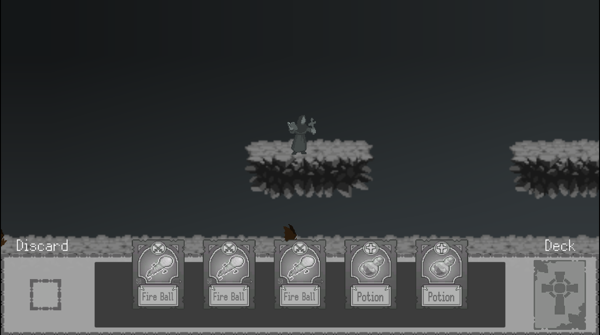

Games
Curse Crusade is a 2D platformer with an innovative deck-building mechanic that adds depth to the gameplay. Developed by a team of four during a month-long game jam, my primary role was level design, and I also contributed significantly to implementing game logic.
 Play Curse Crusade